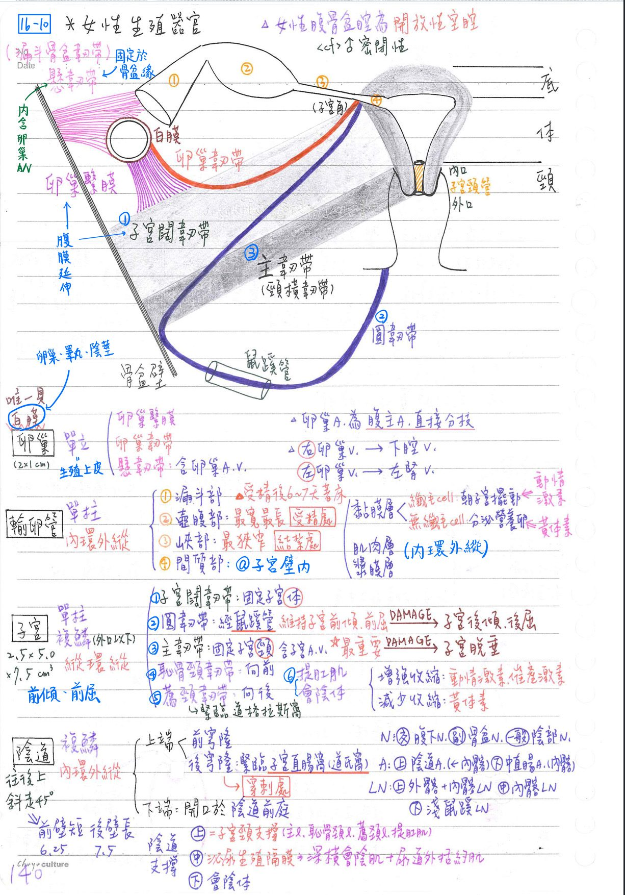
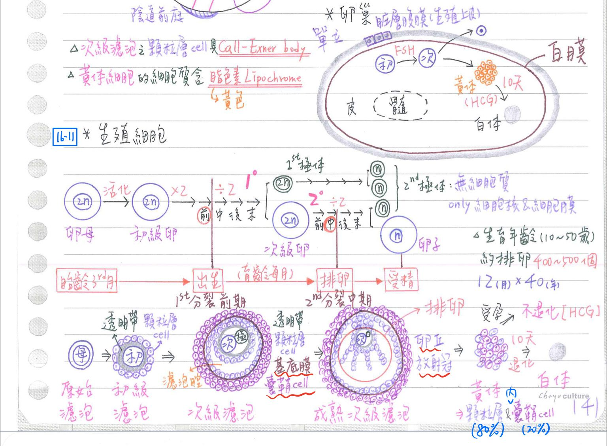
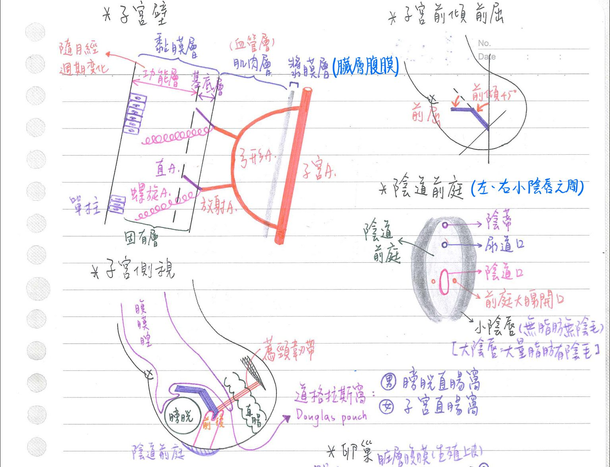
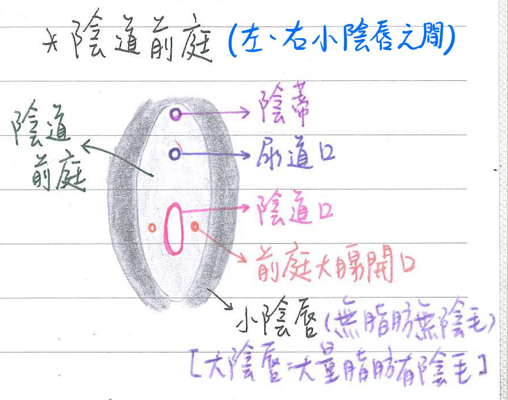
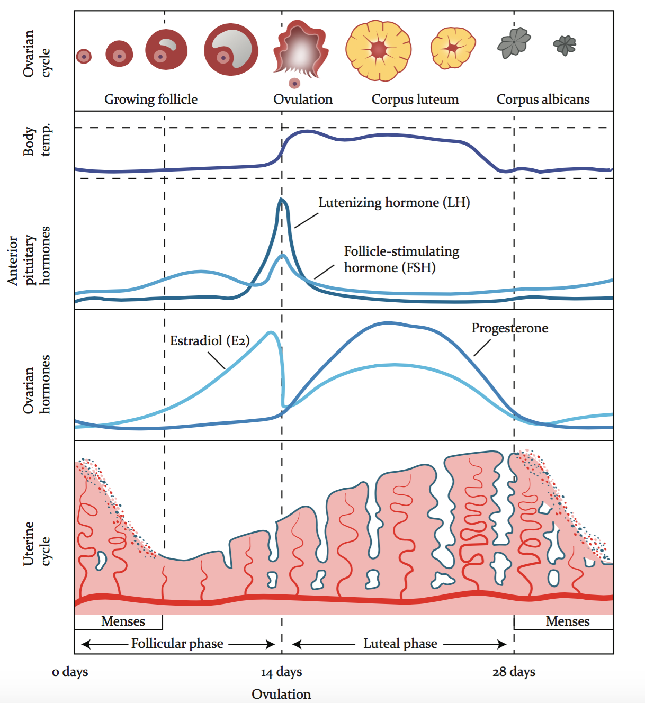
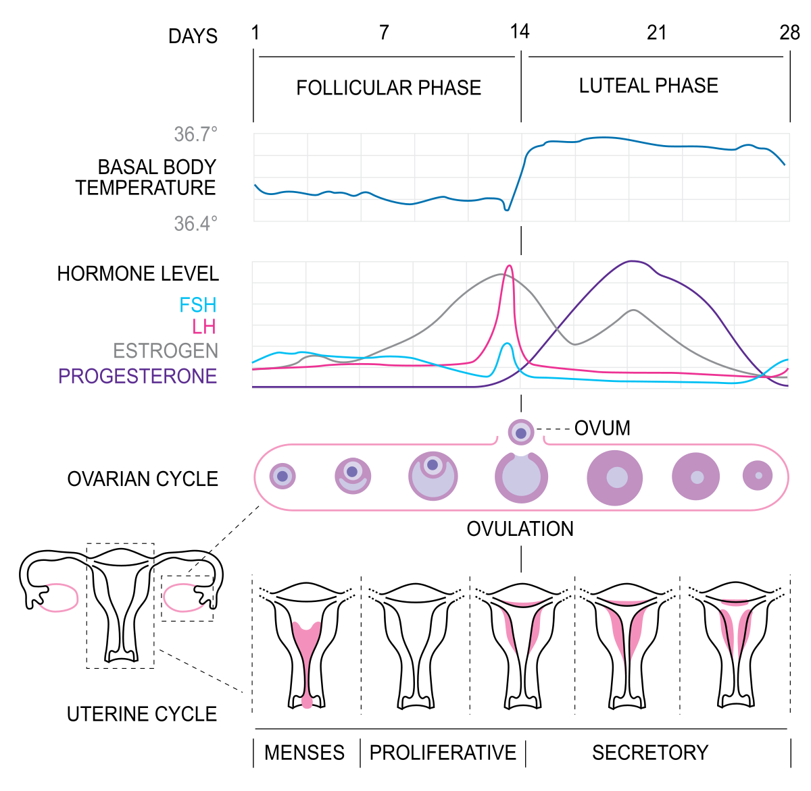

♀️ 生殖系統-女性生殖器官
女性生殖道
- 卵巢(ovary)：單層立方上皮
- 輸卵管(oviduct)：單層柱狀上皮；平滑肌(內環外縱)
- 子宮(uterus)：單層柱狀上皮+複層鱗狀上皮(子宮頸外口以下)；平滑肌(縱環縱)
- 陰道(vagina)：複層鱗狀上皮；平滑肌(內環外縱)
卵巢(ovary)
- 大小：約2 x 1 cm
卵巢-韌帶(ligament)：3
- 卵巢繫膜(mesoovarium)：固定於子宮闊韌帶的後方；為子宮闊韌帶的一部分
- ★[109-2]子宮闊韌帶(含卵巢繫膜、輸卵管繫膜)、懸韌帶：均為腹膜之延伸
- ★[108-1]卵巢(圓)韌帶(ovarian round)：固定於子宮角(子宮體&輸卵管交角)
- ★[109-2]直接連接子宮&卵巢
- 子宮圓韌帶、卵巢韌帶：乃卵巢由腹腔下降時由引帶(gubernaculum)所形成的構造
- 懸韌帶(suspensory l.)=漏斗骨盆韌帶：固定於骨盆緣
- ★[108-2]內含卵巢A/V
- 於胚胎期助卵巢下降至骨盆腔
卵巢-血管
- 卵巢A：為腹主動脈的直接分枝；與子宮A具吻合
- 右卵巢V：注入下腔靜脈
- 左卵巢V：注入左腎V
卵巢-構造
- 卵巢包膜：
- 表面：單層立方上皮=臟層腹膜=生殖上皮；但不具生殖功能
- 其下：緻密結締組織=白膜(tunica albuginea)
- 卵巢內部：
- 皮質(外)：含濾泡(follicle)&間質
- 髓質(內)：含神經、血管，淋巴管及疏鬆結締組織
卵巢-生殖細胞
- 卵母細胞(oogonia, 2n) ⇒ 初級卵細胞(1° oocyte, 2n)
- 經1° 分裂(排卵前) ⇒次級卵細胞(2° oocyte, 2n)+第1極體
- 經2° 分裂(受精後) ⇒ 卵子(ovum, n)+ 第2極體
- oogenesis：形成卵子的過程
- 極體=無細胞質之卵子=細胞膜+細胞核
- 女性生殖細胞數目於胎齡5個月達最高峰，此後因萎縮閉鎖而遞減：
- 卵母細胞於胎齡3個月開始分化；出生時，約100萬個初級卵細胞
→進行至第一次分裂前期即停滯，一直持續至生育年齡
- 生育年齡時，每個月：一個初級卵細胞完成第一次分裂
→並立即進行至第二次分裂中期而排卵；排出之卵為次級卵細胞
- 受精時，次级卵细胞方完成第二次分裂形成卵子，並立即與精子結合成受精卵
卵形成 開始 完成 第1次分裂 出生前 排卵前 第2次分裂 排卵前 受精後 - 生殖細胞於胎齡五月時約500~700萬個
- 出生時約200萬個；青春期時約4萬個
- 生育年齡(初經後至停經前)約排卵：400~500個
濾泡(follicle)、黃體、白體
- 原始(primordial)濾泡：含卵母細胞(oogonia)
- 初級(primary)濾泡：含初級卵細胞+顆粒層細胞
- 透明帶(zone pellucida)：
- 初級卵細胞&顆粒層細胞之間
- 由卵母細胞所分泌之糖蛋白構成[嗜酸性染色、PAS(+)]
- 透明帶(zone pellucida)：
- 次級(secondary)濾泡：
- 含：次級卵細胞+第一極體+顆粒層細胞+內/外囊鞘細胞+濾泡腔
- 顆粒層細胞(granulose cell)：源自生殖索(sex cord)
- 具Call-Exner body[含糖蛋白，PAS(+)]
- 顆粒層細胞&囊鞘細胞之間：具基底膜(basement membrane)
- 囊鞘細胞(theca cell)：源自結締組織之基質細胞(stromal cell)
- 性激素之生合成：膽固醇 ⇒ 黃體素(P) ⇒ 雄性素(A) ⇒ 動情激素(E)
- 囊鞘細胞：可將P轉化成A，但本身因缺乏aromatase⇒故不能製造E
- 顆粒層細胞：本身不能製造A，但可將囊鞘細胞製造之A轉化成E
- FSH、LH作用於顆粒層細胞 ⇒ 使產生黃體素(P)↑、動情激素(E)↑↑
- LH主要作用於囊鞘細胞 ⇒ 使產生黄體素(P)↑、雄性素(A)↑↑
- 葛氏濾泡(Graafian follce)：成熟次級濾泡
- 濾胞腔(antrum)更大
- 具卵丘(cumulus oophorus)：顆粒層細胞構成，承載生殖細胞
- 具放射冠(corona radiate)：顆粒層細胞構成，頂蓋生殖細胞
- LH潮放(surge)可促其排卵(次級卵細胞)：
→放射冠、第1極體、次级卵細胞一起排出
- 黄體(corpus luteum)：排卵後之濾泡；具黃體細胞
- 黃體細胞(luteal cell)：源自顆粒層細胞(80%)、內囊鞘細胞(20%)
- 細胞質中含脂色素(lipochrome)，故呈黃色
- 可製造黃體素(P)↑↑、動情激素(E)↑
- 若排卵後無受精，則黃體約經10天開始退化而成白體
- 若懷孕：胎盤產生人類毛膜生殖腺刺激素(HCG)
→刺激黃體使其不退化，繼續產生黃體素(P)、動情激素(E)幫助懷孕之完成
- 黃體細胞(luteal cell)：源自顆粒層細胞(80%)、內囊鞘細胞(20%)
- 白體(corpus albicans)=閉鎖黄體(atretic corpusuteum)：具疤痕組織
- 黃體細胞凋亡後，被巨噬細胞吞噬吸收
- 鄰近纖維母細胞侵入並產生大量膠原纖維(collagen)，故呈白色
- 閉鎖濾泡(atretic follicle)：濾泡萎縮形成之結締組織(疤痕)
- 閉鎖時機：可發生在濾泡發展的任何階段，尤其胚胎發育期、新生兒期、青春期、懷孕期
- 閉鎖機轉：先顆粒層細胞死亡；再卵細胞死亡
- 顆粒層細胞&囊鞘細胞間之基底膜(basement membrane)加厚
→形成玻璃膜(glassy membrane)→最終被結締組織取代
- 卵母細胞於胎齡3個月開始分化；出生時，約100萬個初級卵細胞


輸卵管(oviduct =Fallopian tube = uterine tube = salpinx)
構造：長約10cm，由外而內分成四部分
- 漏斗部(infundibulum)：向腹腔開口(ostium)→因為要接收卵巢來的卵子；也易感染
- 末端小突起稱繖部(fimbriae)，其中最長者稱卵巢缘(ovarian fimbria)：
- 可貼近卵巢，利用其纖毛將卵巢排出之次級卵細胞掃至輸卵管內
- 女性腹骨盆腔為開放性空腔；男性腹骨盆腔則為密閉性空腔
- 末端小突起稱繖部(fimbriae)，其中最長者稱卵巢缘(ovarian fimbria)：
- 壺腹部(ampulla)：最寬、長部，常為受精處
- 卵在24小時內有受精能力
- 精子於女體中通常在48小時內有致孕能力(最高達120小時)
- 受精後6~7天，以囊胚(blastocyst)於子宮內膜著床
⇒致子宫內膜功能層產生形態變化(細胞較大且呈多角形)，形成蛻膜(decidua)
- 峽部(isthmus)：最狹窄部；常為女性結紮處
- 間質部(intramural)：子宮壁內
輸卵管-管壁：由內而外成三層
- 黏膜層：為單層柱狀上皮，含⇒
- 纖毛細胞(ciliated cell)：具纖毛，纖毛朝向子宫擺動
- 無纖毛細胞(nonciliated cell)：分泌營養卵的物質
- [重點]隨月經周期變化：
- 動情激素(E)：主要作用於纖毛細胞
- 黃體素(P)：主要作用於無纖毛細胞
- 肌肉層：平滑肌(內環外縱)
- 漿膜層：臟層腹膜
子宮(uterus)
子宮-形態
- 倒梨形：7.5cm(高) x 5.0cm(寬) x 2.5cm(厚) [hint：2.5的1, 2, 3倍]
- 前傾(anteversion)：子宫頸長軸朝陰道長軸前傾，與陰道成直角
- 前屈(anteflexion)：子宮體長軸朝子宮頸長軸前屈(約10度)
子宮-由上而下分成三部分
- 子宮底(fundus)：位於子宮上方；輸卵管入口處
- 子宮體(body)：含子宮腔(uterine cavity)
- 子宮頸(cervix)：位於子宮下方
- 內口(internal os)：子宮頸與子宮腔相接處
- 外口(external os)：子宮頸與陰道相接處
- 子宮頸管(cervical canal)：外口與內口間之管
- 當尿液排空，子宮緊貼於膀胱的上方，幾近水平
子宮-表皮
- 外口以下(陰道內)：複層無角化鱗狀(nonkeratinized squamous)上皮
- 外口以上：單層柱狀上皮；可分泌黏液((mucus-secreting columnar))
- 鱗狀&柱狀上皮之交界處(transitional zone)：為子宮頸癌好犯處
子宮-固定子宮構造
- ★[108-1]闊韌帶(broad ligament)：★將子宮體附著於兩側骨盆壁
- 分為三部分：
- 卵巢繫膜(mesovarium)：支撐卵巢
- 輸卵管繫膜(mesosalpinx)：支撐輸卵管
- 子宮繫膜(mesometrium)：支撐子宮角&子宮體
- 為腹膜延伸，上游離端含輸卵管(uterine tube)
- 內含：
- 卵巢圓韌帶(位其後方)、子宮圓韌帶(位其前方)
- 子宮A/V(位其內緣)、卵巢A/V(位其上緣)、淋巴管、神經
- 子宮A：經頸橫韌帶至子宮頸，沿闊韌帶內緣向上
- 卵巢A：經懸韌帶至卵巢，沿闊韌帶上緣向內
→[重點]兩者在子宮角(uterine horn；子宮與輸卵管交接處)吻合
- 分為三部分：
- ★[108-1]★[109-2]子宫圓韌帶(round ligament)：由★子宫角經鼠蹊管固定於大陰唇
- [重點]维持子宫前傾、前屈位置；若受損⇒造成子宫後傾、後屈
- ★[108-1]主韌帶/樞紐韌帶(cardinal l.)=頸橫初帶：★將子宮頸固定於兩側骨盆壁
- [重點]為支持子宫最重要之韌帶 ⇒ 若受損會造成子宫脫垂
- 內含：子宮A/V
- 薦頸韌帶(sarcocervical ligament)：將子宮頸固定於薦椎
- 緊臨道氏窩(Douglas pouch)[=子宮直腸窩(女)；膀胱直腸窩(男)]
- 道氏窩(Douglas pouch)：為★[109-2]腹膜腔之最低點
- 緊臨道氏窩(Douglas pouch)[=子宮直腸窩(女)；膀胱直腸窩(男)]
- 恥骨頸韌帶(pubocervical ligamen)：將子宮頸固定於恥骨
- 提肛肌(levatores ani) & 會陰體(perineal body)
子宮-淋巴引流
- 子宮底：→腰淋結巴結
- 子宫體、子宫頸：→内髂淋巴結&外髂淋巴結
- 少數子宫底/子宮體(沿子宮圓韌帶)： →淺鼠蹊淋巴結

子宮-子宮壁：由外而內三層
- 漿膜層：臟層腹膜
- 肌肉層(myometrium)：具平滑肌★[108-2](縱-環-縱)
- 中層含豐富的血管(弓形A、放射A)；稱為血管層(stratum vascularae)
- 動情激素、催產激素：增強其收縮；黃體素：少其收縮(安胎)
- ★[108-2]懷孕時：子宮肌層的平滑肌細胞會肥大(hypertrophy)&增生(hyperplasia)
- ★[108-2]平滑肌含量：子宮體>子宮頸
- 黏膜層=子宮內膜(endometrium)：具單層柱狀上皮、固有層
- 深層=基底層(stratumbasale)：較薄
- 可再生功能層
- 由直A支配(較短、較直)
- 淺層= 功能層(stratum functionale)=海綿層(表淺)+緻密層：較厚
- [重點]可隨月經週期變化(增殖/分泌/剝落)
- 由螺旋A支配(較長、較曲)
- 懷孕時形成蛻膜
- 深層=基底層(stratumbasale)：較薄
子宮-血液供應
- 子宮A(uterine a)：內髂A之分枝(沿樞紐韌帶至子宮頸)
- 子宮A →
- 弓形A(arcuate) →
- 放射A(radial)：@子宮肌層→
- 直A(straight)：@子宮內膜基底層
- 螺旋A(spiral)：子宮內膜功能層(微血管形成lacuna)
- 卵巢A：腹主動脈之分枝；與子宮A吻合
陰道(vagina)
陰道-解剖結構
- 往後上方斜走45°，前壁長 6.25cm；後壁長 7.5cm
- 上端：
- 前穹窿(fornix)
- 後穹窿(fornix)：緊鄰直腸子宮窩(Dougla spouch)
- 內視鏡經常透過陰道後穹窿⇒檢視卵巢狀況
- 下端：開口於陰道前庭(vestibule)，處女膜(hymen)將其部份封閉
- 陰道前庭(vestibule)：
- 左、右小陰唇之間
- 含陰道口(後下方)、尿道口(前上方)、前庭大腺開口(兩旁)
陰道-組織：3層
- 外纖維層(adventitia)：為彈性纖維豐富之外膜，提供彈性
- 中肌肉層(muscular layer)：為平滑肌(內環外縱)
- 內黏膜層(mucosa)：會隨月經周期而變化
- 為複層扁平上皮(含肝醣，經陰道細菌分解成乳酸等酸性分泌物)
- 無腺體(由子宮頸腺潤滑)
- 固有層含許多靜脈(似勃起組織)及彈性纖維
陰道-支持組織
- 上部[=子宮的支撐組織]：提肛肌、頸橫韌帶、恥骨頸韌帶、薦頸韌帶
- 中部：泌尿生殖膈膜(深橫會陰肌+尿道外括約肌)
- 下部：會陰體

陰道-血液供應
- 上：陰道A(←內髂A)
- 下：中直腸A(←內髂A)
陰道-神經支配
- 交感：腹下N
- 副交感：骨盆N
- 一般感覺：陰部N(體神經)
陰道-淋巴引流
- 上1/3：內髂淋巴結(主要)+外髂淋巴結
- 中1/3：內髂淋巴結
- 下1/3：淺鼠蹊淋巴結
陰戶(vulva)：外陰部
- 外陰部(vulva)：富含皮脂腺、汗腺、感覺接受器[Meissner(輕觸覺)、Pacinian(觸壓覺)]等
- 大陰唇(labia majora)：含大量脂肪，外有陰毛
- 小陰唇(labia minora)：無脂肪、無陰毛；其間為陰道前庭(vestibule)
- 前庭大腺[greater vestibular (Barthon) gland]：分泌黏液，共兩個
- 位於球海綿體肌之深層，淺會陰窩(superficial perineal pouch)中
- 開口於陰道口兩旁，即小陰唇與處女膜之間溝
- 前庭小腺(lesser vestibular gland)：分泌黏液；多個(密佈於陰蒂、尿道周圍)
- 陰阜(mons pubis)：恥骨聯合上方之突起，外覆陰毛
陰蒂(clitoris)：相當於陰莖，含可勃起之海绵組織；位於前庭之頂(apex)
| 女 | 男 |
|---|---|
| 前庭球海綿體 | 尿道海綿體、陰莖球 |
| 陰蒂腳海綿體 | 陰莖海綿體、陰莖腳 |
- 陰蒂體(body)：游離部份；內含2條陰蒂腳海綿體
- 陰蒂根(root)：附著部份；包括1前庭球+2陰蒂腳
- 前庭球(vestibular bulb)：前庭球海綿體之近端
- 在小陰唇外側，位於球海綿體肌的深層；分裂成左、右
- 與男性尿道海綿體(corpus spongiosum)&陰莖球為同源結構
- 由淺而深排列：大陰唇/小陰唇→球海綿體肌→前庭球→前庭大腺→泌尿生殖膈膜
- 陰蒂腳(crura)：陰蒂腳海綿體之近端
- 位於坐骨海绵體肌的深層；左右各一
- 與男性陰莖海綿體(corpus cavernosum)及陰莖腳為同源結構
- 前庭球(vestibular bulb)：前庭球海綿體之近端
- 陰蒂頭(glans)：前庭球海綿體之遠端特化而成
月經週期(menstrual cycle)：28天
卵巢週期(ovarian cycle)
- 濾泡期(follicular phase)=排卵前期：第0〜14天
- 黄體期(luteal phase)=排卵後期：第14~28天
子宫週期(uterine cycle)
- 行經期(menstruation phase)：3〜5天
- 因動情激素及黃體激素含量下降 ⇒ 子宮前列腺素(Prostaglandin F, PGF)上升
→螺旋A痙攣→子宮內膜缺血壞死而剝落
- 經血：含3/4動脈血、1/4靜脈血；平均量：約30cc(0~80cc)
- 因動情激素及黃體激素含量下降 ⇒ 子宮前列腺素(Prostaglandin F, PGF)上升
- 增殖期(proliferative phase)：約10天[差異最大]
- 子宮內膜只剩下薄薄的結締組織&近端的螺旋A
⇒★[110-2]在estrogen的影響下子宮內膜細胞重建腺體並且分泌膠原蛋白，螺旋A延長
- 主要激素：動情激素↑ ⇒ 子宮內膜上皮增生、腺體增生
- 促進排卵：主要是黃體生成素(LH)↑
- 排卵日=月經周期-14天
- 子宮內膜只剩下薄薄的結締組織&近端的螺旋A
- ★[110-2]分泌期(secretory phase)：14天(最固定)
- 主要激素：黃體激素↑，引起：
- 子宮內膜腺體擴大、分泌
- 基質水腫
- 上皮細胞肥大並分泌含有肝糖等營養的黏液
- 基質細胞儲存大量肝糖而形成蛻膜細胞
- 螺旋A增長而變得越來越蜷曲，已經達到子宮內膜表面，較少細胞分裂
- 黃體激素↑ ⇒ 造成體溫上升0.5℃
- 主要激素：黃體激素↑，引起：

